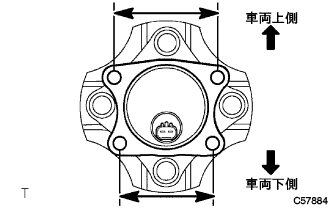
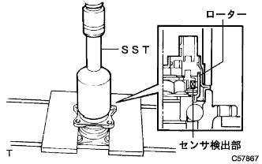
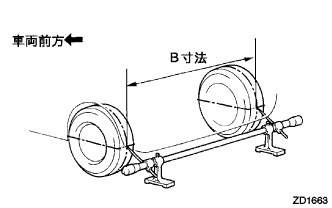
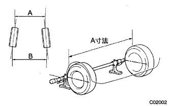

スキッドコントロール センサ 取り付け |
| 1. スキッドコントロール センサ取り付け |
白ガソリンを使用して、スキッドコントロールセンサ取り付け面のシール剤等を拭き取る。
|  |
センサのコネクタ位置が車両取り付け状態で最も下側になるように、スキツドコントロールセンサをリヤアクスルハブに取り付ける。
|  |
SSTおよびプレスを使用して、新品のスキツドコントロールセンサをリヤアクスルハブの端面まで圧入する。
| 2. リヤアクスル ハブ ＆ ベアリングASSY LH取り付け |
 |
ボルト４本で、ハブ&ベアリングASSYをアクスルビームASSYに取り付ける。
| 3. リヤブレーキ ドラム取り付け |
| 4. スキッドコントロール センサ ワイヤ接続 |
| 5. リヤタイヤ取り付け |
| 6. リヤホイールアライメント点検·調整 |
車両をゆすり、車両を安定させる。
車両を直進で5ｍ手押しして前進させる。
|  |
トーインゲージの指針高さを必ずリヤホイール軸中心高さに合わせる。
後輪タイヤ各々の後部にトレッドセンターをしるし、マーク間の距離(B寸法)を測定する。
車両をゆっくり押して前進させ、後輪を180°回転させる。
|  |
後輪タイヤ前部でマーク間の距離(A寸法)を計測する。
トーインを求める。
| 7. テストモード点検(スピードセンサ系統) |